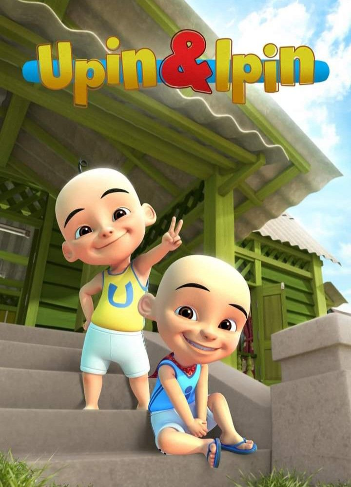
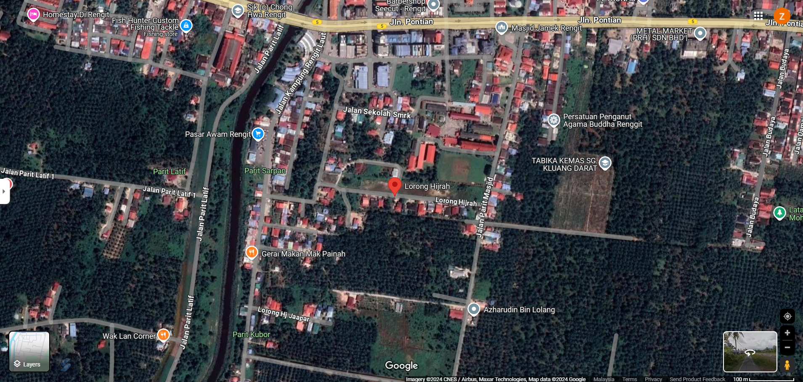

🎀IT'S MY BIODATA!🎀
First and foremost, Assalamualaikum and hi everyone! My name is Nur Allya Hafiza Rosman. I'am 20 years old, and I was born in Goh Maternity Hospital in Batu Pahat Town. I was raised in Johor, so basically I am a pure Johorean. I am the eldest daughter from 4 siblings. To be honest, its such an challenging experience because by being the eldest siblings, you should show such a good example so that the others sibling could follow the right attitude from you, but for me, I hope all of my brothers and sister can be a good and wise person. I want our parents be so proud of us.
Now let's talked about the thing that i love. Firstly, I loved to hear a song while doing my core. For me, music is also a therapy. As for me, I love so many genre of music. I can listen to indonesian pop, baladda, korean pop, RNB and many others, and of course, im also love the local music regarding its language or dialect. Here below is my top pick favourite song.
Top 5 Song of my fav song
- Tentang Dia by Arghpiez
- Stargazing by Myles Smith
- Lakaran Sebuah Kisah by Fiq7
- Can't Lie Ali Gatie
- Nilai Permata by Fiq7
Apart from listening to music, i also love to watch a korean drama. It such a realeased to watch a good drama with a breathtaking scenary. Here's some of my favourite K-drama:
Top 5 my fav K-drama
- True Beauty
- Love Revolution
- Queen Of Tears
- Lovely Runner
- Goblin
Some of My Favourite Cartoon
Also, I do have my comfort childhood cartoon. Click on the image to go to my fav childhood YouTube Channel.
Les' Copaque Production

This is my Hometown address, which is Kampung Parit Masjid Rengit, Johor

|